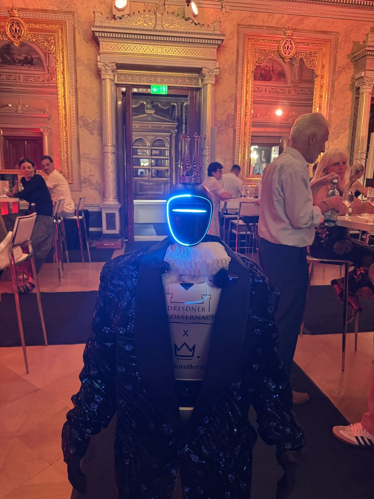

- Startseite
- Roboter für die Weihnachtsfeier
Weihnachtsfeier · Österreich
Roboter für die Weihnachtsfeier
Der Unitree G1 empfängt Ihr Team, steht am Christbaum für Fotos bereit und tanzt zur Playlist des Abends. In ganz Österreich, mit Operator und Transport.

Bei einer Weihnachtsfeier sitzen Lehrling und Vorstand im selben Saal. Ein Programmpunkt muss deshalb für alle funktionieren. Der Unitree G1 tut das: Er begrüßt, lässt sich fotografieren und tanzt, und niemand aus Ihrem Team muss auf die Bühne oder sich um Technik kümmern.
Der Dezember 2026 im Kalender
| Datum | Tag | Was das für Ihre Planung heißt |
|---|---|---|
| 4., 11. und 18. Dezember | Freitag | Die üblichen Abende für Firmenfeiern. |
| 6. Dezember | Sonntag | Nikolaus. Für Feiern mit Familien der Mitarbeitenden. |
| 8. Dezember | Dienstag | Mariä Empfängnis, Feiertag. Der Montag davor ist für viele ein Fenstertag. |
| 24. Dezember | Donnerstag | Heiliger Abend. |
| 31. Dezember | Donnerstag | Silvester, mit Countdown zu Mitternacht. |
Ist im Dezember kein Abend mehr frei, bleibt der Neujahrsempfang im Jänner. Der Anlass, auf das Jahr zurückzublicken, ist derselbe.
Beispiel: Weihnachtsfeier von 18 bis 22 Uhr
| Zeit | Was passiert |
|---|---|
| Vor dem Einlass | Platz am Eingang und am Christbaum festlegen, Gehen und Choreografie auf dem Boden des Saals testen, kurze Probe mit der Moderation. |
| 18:00 | Empfang. Der Roboter begrüßt die Ankommenden mit Geste und Stimme und gibt die Hand. |
| 18:45 | Technische Pause, während die Gäste Platz nehmen. |
| 19:00 | Der Roboter sagt die Geschäftsführung an und spricht mit der Moderation über das vergangene Jahr. |
| 19:30 | Abendessen. Der Operator wechselt die Akkus. |
| 20:30 | Choreografie zur Playlist, danach Fotos am Christbaum mit Teams und Abteilungen. |
| 21:15 | Letzte Fotos und Verabschiedung. |
Die Uhrzeiten richten sich nach Ihrem Programm. Texte und Rolle des Roboters legen wir vorher gemeinsam fest.
Drei Aufgaben am Abend
Empfang
Der G1 steht am Eingang und begrüßt jede Kollegin und jeden Kollegen. Bei Teams aus mehreren Ländern wechselt er die Sprache.
Foto am Christbaum
Mit Nikolausmütze und Ihrem Logo auf der Brust wird der Roboter zum Fotomotiv. Der Operator sorgt dafür, dass die Reihe zügig vorankommt.
Auftritt im offiziellen Teil
Der Roboter sagt die Geschäftsführung an oder eröffnet den Abend von der Bühne. Was er sagt, steht vorher fest.
Einige Stunden oder der ganze Tag
Für eine Weihnachtsfeier am Abend genügt meist ein Auftritt von einigen Stunden. Er wird nach Ihrem Programm kalkuliert und liegt immer unter dem Tagespreis. Beginnt der Tag mit einer Betriebsversammlung und endet mit der Feier, ist der ganze Veranstaltungstag das passende Format: ab 2.300 € netto. Rechenbeispiele stehen auf der Seite Preise.
Was im Preis enthalten ist
- Unitree G1 mit Operator während des gesamten Auftritts
- Transport in ganz Österreich, ohne Kilometeraufschlag
- Branding mit Logo und QR-Code, im Dezember mit Nikolausmütze
- Vorbereitung der Texte für Begrüßung und Ansagen
- Haftpflichtversicherung und Ersatzakkus
Bezahlt wird nach der Feier. Eine Anzahlung brauchen wir nicht.
Was wir vom Saal brauchen
- Fläche. Einige Quadratmeter ebener Boden am Eingang und für die Choreografie.
- Strom. Eine gewöhnliche Steckdose.
- Ton. Soll der Roboter im ganzen Saal zu hören sein, läuft seine Stimme über die Anlage des Hauses.
- Programm. Uhrzeiten, Namen für die Ansagen und das, was der Roboter über Ihr Unternehmen wissen soll.
Was der Roboter nicht macht
- Er ersetzt weder DJ noch Moderation. Er ist ein Programmpunkt des Abends.
- Er arbeitet nicht ohne Pausen. Die Pausen legen wir auf Essen und Reden.
- Er bleibt nie allein unter den Gästen. Der Operator ist die ganze Zeit bei ihm.
- Er führt in einem lauten Saal keine langen freien Gespräche. Auf der Bühne arbeiten wir mit vorbereiteten Texten.
Aufnahmen von Abendveranstaltungen


In ganz Österreich
Wir kommen in jede Stadt Österreichs, ohne Aufschlag und ohne Kilometerlimit. Eigene Seiten gibt es für Wien, Graz, Linz, Salzburg und Innsbruck. Für Sommerfest, Jubiläum und Kick-off gibt es die Seite Roboter für die Firmenfeier, für Messeauftritte Messe-Roboter mieten. Nach Weihnachten beginnt die Hochsaison der Bälle: Kongress, Gala und Ball.
Häufige Fragen
Ein ganzer Veranstaltungstag kostet ab 2.300 € netto. Für eine Feier am Abend genügt meist ein Auftritt von einigen Stunden. Er wird nach Ihrem Programm kalkuliert und liegt immer unter dem Tagespreis. Operator, Transport, Branding und Haftpflichtversicherung sind enthalten.
Die Freitage vor Weihnachten: der 4., 11. und 18. Dezember. Dazu kommen die Tage um den Feiertag am Dienstag, 8. Dezember. Wer an einem dieser Abende feiert, sollte früh anfragen.
Ja. Im Dezember kommt er mit Nikolausmütze, und die Show bekommt eine weihnachtliche Inszenierung. Ihr Logo und ein QR-Code auf der Brust sind im Preis enthalten.
Einige Quadratmeter ebener Boden reichen. Der Roboter arbeitet am Eingang, auf der Bühne und zwischen den Tischen, immer in Begleitung des Operators.
Auf Deutsch und in jeder anderen Sprache. Während des Abends wechselt er von einer Sprache in die andere.
Nach der Feier. Sie reservieren ohne Anzahlung, die Rechnung kommt nach der Veranstaltung.